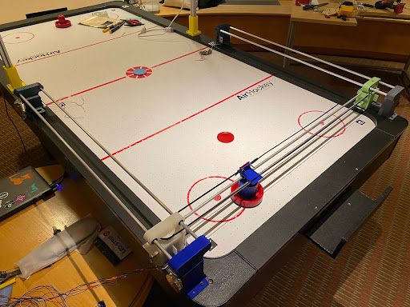

Speccing Motors
Before we could start working on creating the mechanical system, we needed to figure out what motors we were going to use for the system. We looked into using stepper motors (PN can be found in the budget spreadsheet) and wanted to see if they would fulfill the project’s requirements. To check this we looked into the moment we expected the stepper would undergo and how fast the steppers were able to rotate. The equations below show how we came to the conclusion of using the steppers we have in the project.
Required Acceleration to Block Goals

Expected Torque for Required Acceleration
RPM from the Selected Steppers
Looking at the stepper spec sheet, we can see that the stepper we selected does fulfill the calculated requirements.
Version 1
After constructing the first version of the gantry, we found that there were multiple issues with our initial prototype. First of all, we discovered that having single 0.25” rods as axial constraints was not rigid enough to stop the system from over-rotating due to torques induced by acceleration and deceleration. The plastic bushings we used to slide our 3D printed parts along the rods did help reduce some friction between the parts and the rods; however, they were still not smooth enough. Also, some of the 3D printed parts were not as strong as they needed to be, so they broke during assembly when fasteners were driven into them.
Version 2
TThe second iteration of the design included some major improvements. For example, linear bearings helped reduce friction significantly and the second rod in each axis made the system much more stable.
However, we still ran into a myriad of issues. One issue was that in assembling the system, we hammered the linear bearings into the 3D prints, which damaged them and meant that the bearings had to be replaced. We then made sure to file down the insides of the parts before inserting the bearings so that the bearings wouldn’t be under large radial loads which would mess with the balls. By decreasing the radial load on the bearings, the assembly moved more smoothly.
Another major issue we ran into was that the linear travel across the beams was not smooth; the assembly seemed to get stuck in some places. There were a few reasons for this. For one, many of the rods were not perfectly smooth or were slightly bent. This meant that the 3D printed parts were getting stuck in certain places as they moved along the rods. In order to mitigate this issue, we sanded the rods and lubricated them with WD-40. It seemed like some of the issues with smooth movement were also caused by poor quality ball bearings—we found that even within a package of supposedly identical bearings, the quality of the bearings could vary significantly. Therefore, we tested the bearings out by seeing how easily they slid on the rods by themselves (independent of any 3D printed parts) and then replaced any poorly performing bearings with ones that had performed well during testing. We also noticed that the 3D printed parts were dragging against the table in some places, further impeding their movement. Therefore, we filed and sanded down the bottoms of the parts.
Despite making the travel as smooth as possible, the striker was unable to move fast enough for a hard hitting shot. We are not sure as to the reason the striker is too slow but we believe that it could be due to the stepper speed. When we ran the stepper at its fastest, the stepper would skip steps and wouldn’t move. This also brought up another problem where the system would think the striker is in a position that it’s not.
